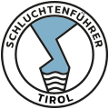

Eure private Tour
Ihr erlebt die Schlucht nur mit eurer eigenen Gruppe. Keine fremden Teilnehmer, keine anonyme Standardtour.
Private JGA-Tour · Kobelache bei Dornbirn
Eure private Canyoning-Tour ohne fremde Teilnehmer, persönlich geführt von Tanja und Mario. Ausrüstung, Schuhe, Transfer, Fotos, Videos und Ausklang sind organisiert.

Eine private Tour, vollständige Ausrüstung und ein Ablauf, der für euren gemeinsamen Tag gemacht ist.
Ihr erlebt die Schlucht nur mit eurer eigenen Gruppe. Keine fremden Teilnehmer, keine anonyme Standardtour.
Tourauswahl, Ablauf und Ausklang sind auf Junggesellenabschiede abgestimmt, damit ihr gemeinsam etwas Besonderes erlebt.
Neoprenanzug, Helm, Gurt, Neoprensocken und spezielle Canyoning-Schuhe stellen wir euch. Ihr müsst keine eigenen Turnschuhe opfern.
Wenn mindestens 10 andere Teilnehmer zahlen, kommt die Braut oder der Bräutigam zusätzlich kostenlos mit.
Ihr konzentriert euch auf eure Tour. Ausgewählte Gruppen-, Natur- und Actionmomente halten wir für euch fest.
Ihr habt von der ersten WhatsApp-Nachricht bis zum Abschlussgetränk direkte Ansprechpartner. Geführt wird eure Tour von autorisierten Tiroler Schluchtenführern.
Nach der Tour gibt es einen kleinen Snack sowie Bier, Radler oder Limo. Natürlich erst, wenn die Tour beendet ist.

Ihr kümmert euch um euren JGA, wir um den Canyoning-Tag. Ab dem Wanderparkplatz Gütle übernehmen wir Ausrüstung mit Canyoning-Schuhen, Transfer zum Einstieg und zurück, Sicherheits-Einweisung, Führung, Fotos, Videos sowie Snack und Getränke danach.
Ihr bringt nur Badekleidung, Handtuch und Wechselkleidung mit.
Das Angebot gilt genauso für einen Junggesellinnenabschied. In Österreich wird ein JGA häufig auch Polterabend oder Poltertag genannt. Entscheidend ist nicht die Bezeichnung, sondern dass ihr als Freundesgruppe gemeinsam und ohne fremde Teilnehmer unterwegs seid.
Alle Informationen zur Kobelache und zur Anreise nach Dornbirn

Ihr bewegt euch gemeinsam durch eine natürliche Schlucht und kombiniert je nach Tour Abseilen, Schwimmen, Abklettern, natürliche Wasserrutschen und freiwillige Sprungmöglichkeiten. Es gibt keine Zuschauerrolle: Die Gruppe erlebt den Weg durch die Kobelache gemeinsam. Genau diese Mischung aus Natur, Action und Teamgefühl macht Canyoning zu einer starken Alternative zu einem klassischen Junggesellenabschied.
Niemand wird zu einem Sprung gedrängt. Jeder Sprung kann umgangen werden. Bei Unsicherheit, Höhen- oder Wasserangst begleitet euch der Guide eng und einfühlsam durch die passende Variante.

Für Einsteiger. Ruhiger Einstieg ins Canyoning mit abwechslungsreichen Elementen.
100 €pro Person
Tour ansehen
Ausgewogen und sportlich. Die richtige Mischung aus Action und machbarer Herausforderung.
100 €pro Person
Tour ansehen
Für sehr Sportliche. Die lange, konditionell fordernde Tour durch die Kobelache.
150 €pro Person
Tour ansehen
Individuelle Spezialtour. Für sehr ambitionierte Gruppen passend zur Schlucht geplant.
Auf Anfrageindividuell geplant
Tour ansehenAlle Touren direkt vergleichen
Merlins World ist ideal für Einsteiger und alle, die sich langsam ans Canyoning herantasten möchten. Kangaroo Jump bietet für die meisten sportlichen JGAs die ausgewogenste Mischung aus Action und machbarer Herausforderung. Kobelache Intensiv ist die lange, konditionell anspruchsvolle Wahl für sehr sportliche Gruppen. Wenn ihr unsicher seid, nennt uns bei der Anfrage ehrlich Schwimmkönnen, Fitness und mögliche Höhen- oder Wasserangst. Wir empfehlen die Tour nach dem vorsichtigsten Teilnehmer, damit der Tag für die gesamte Gruppe funktioniert.
Die Einsteiger- und Mitteltouren eignen sich auch ohne Canyoning-Erfahrung. Alle Teilnehmer müssen sicher schwimmen können, über die für die gewählte Tour nötige Kondition verfügen und sich auf nassem, unebenem Untergrund bewegen können. Relevante Herz-Kreislauf- oder neurologische Erkrankungen, Verletzungen, orthopädische Einschränkungen, Schwangerschaft und notwendige Medikamente besprecht ihr bitte persönlich mit uns. Im Einzelfall kann eine ärztliche Einschätzung nötig sein.
Handys in wasserdichter Hülle und GoPros sind nach vorheriger Absprache möglich. Brillen tragt ihr auf eigene Verantwortung, Kontaktlinsen sind in der Regel unproblematisch. Die vollständige Vorbereitung findet ihr in unserer JGA-Canyoning-Checkliste.

Wir sind Tanja und Mario. Als autorisierte Tiroler Schluchtenführer begleiten wir euren JGA persönlich von der ersten Anfrage bis zum Abschlussgetränk.

Behördlich autorisierte Tiroler Schluchtenführer.
Leichter Regen bedeutet nicht automatisch, dass die Tour ausfällt. Wir prüfen die Wetterentwicklung vor der Tour mehrfach, um Wasserstand, Strömung, Gewitterrisiko und die Entwicklung im gesamten Einzugsgebiet sicher einzuschätzen. Wir beurteilen die Bedingungen fachlich und treffen die Sicherheitsentscheidung. Müssen wir die Tour aus Sicherheitsgründen absagen, suchen wir zuerst gemeinsam nach einem passenden Ersatztermin. Findet sich keine passende Alternative, erstatten wir den bereits gezahlten Tourpreis vollständig.

Wetter-, Umbuchungs- und Stornoregeln lesen

Wenn alle wieder umgezogen sind, lassen wir das Erlebnis mit einem kleinen Snack und einem Getränk ausklingen. Bier und Radler gibt es ausschließlich nach der Tour. Wer alkoholfrei bleiben möchte, bekommt Limo.
Ja. Jede JGA-Tour ist eine Privattour ohne fremde Teilnehmer.
Für Merlins World und Kangaroo Jump nicht. Sichere Schwimmkenntnisse, Trittsicherheit und passende Kondition sind dennoch erforderlich.
Nein. Jeder Sprung ist freiwillig und kann umgangen werden.
Ja. Spezielle Canyoning-Schuhe sowie alle Fotos und Videos sind im genannten Tourpreis enthalten.
Besprecht Verkleidungen und Accessoires vorher mit uns. Sie dürfen Sicherheitsausrüstung, Bewegungsfreiheit und Sicht nicht beeinträchtigen. In der Schlucht hat die Sicherheit immer Vorrang.
Fragt an, sobald euer Termin ungefähr feststeht. Besonders Samstage können früh belegt sein. Eine Anfrage ist unverbindlich und wir antworten während unserer üblichen Erreichbarkeit meistens innerhalb von 10 Minuten.
Jetzt unverbindlich per WhatsApp oder E-Mail anfragen · Alle häufigen Fragen zum JGA Canyoning